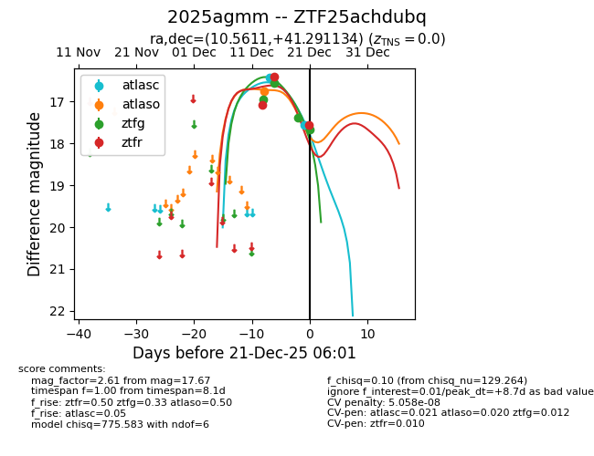
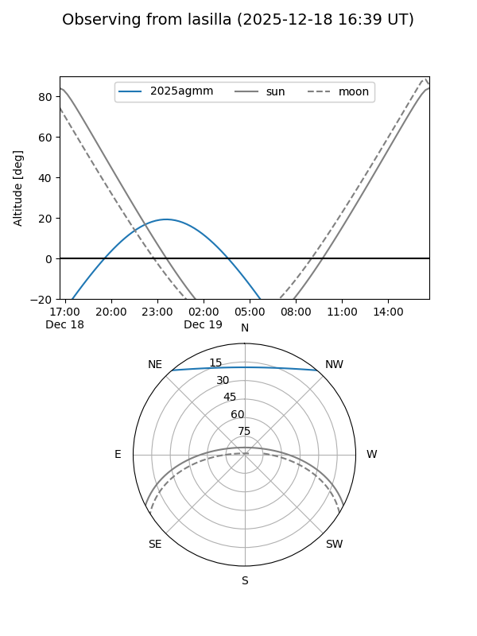
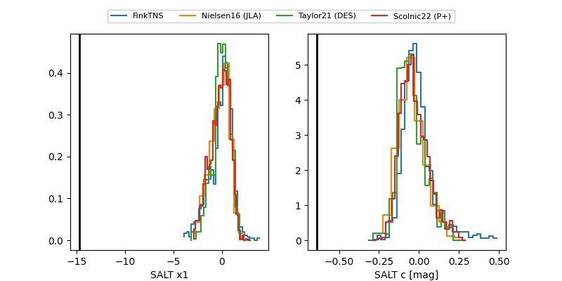

2025agmm
Target 2025agmm at 2025-12-21 04:43
Aliases and brokers:
FINK: fink-portal.org/ZTF25achdubq
Lasair: lasair-ztf.lsst.ac.uk/objects/ZTF25achdubq
ALeRCE: alerce.online/object/ZTF25achdubq
TNS: wis-tns.org/object/2025agmm
YSE: ziggy.ucolick.org/yse/transient_detail/2025agmm
alt names
ZTF25achdubq (ztf,fink_ztf)
2025agmm (tns,yse)
Coordinates:
equatorial (ra, dec) = 10.5611,+41.29113
equatorial (HMS+DMS) = 00:42:14.65,+41:17:28.08
galactic (l, b) = (121.0754,-21.54747)
Flags:
likely cv
Photometry:
last atlasc=17.55, atlaso=16.74, ztfg=17.38, ztfr=16.41
2 atlasc, 1 atlaso, 3 ztfg, 2 ztfr detections
Lightcurve

Visibility


Additional plots
